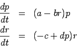
This is a standard problem that can be found is almost all ODE textbooks. Examining the equations, we see that the p population grows if the r population is not present. The presence of rretards growth in the p population. Clearly, this is a description of a prey population. Similarly, r is a predator population.
While the trivial solution p=0 and r=0 is an equilibrium
point, it does not describe any kind of co-existence. However, the
other solution p=c/d and r=a/b describes a nontrivial co-existence.
If you linearize the system as demonstrated in class
near the trivial solution, you
obtain
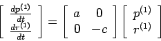
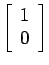
and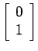
. Thus, we have a saddle point with growth along the p axis and decay along the raxis.
For the nontrivial equilibrium point, the local behavior near this
point is described by
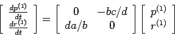
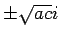
, and the local behavior is a center. Note: This does not mean that the equilibrium point is necessarily surround by closed orbits (why?), even though it is the case for this particular problem.For the bonus, I set all the parameters to be one and let Maple do the work for me.
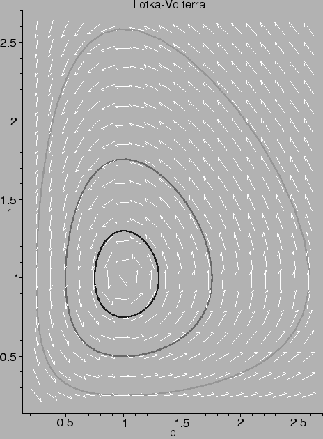
This problem is similar to a compound interest problem except for the
sound term. If we denote the balance in quarter n as Bn, then we
can describe the evolution of the balance as
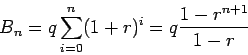
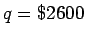
, r=0.05125/4 and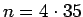
, we see that she will have saved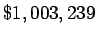
by the time she retires.
Here, we replace the discrete problem with a continuous problem. The
methodology is exactly the same. All discrete quantities are replaced
with annual rates.
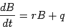
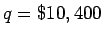
per year and r = 0.05. Solving the ODE, one obtains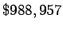
which is almost the same as what she would have earned with the higher quarterly rate. This is why financial institutions are required to provide consumers with the annualized percentage rate (APR). The APR is the aggregate rate over one year's time, and it removes ambiguity about when interest is compounded.